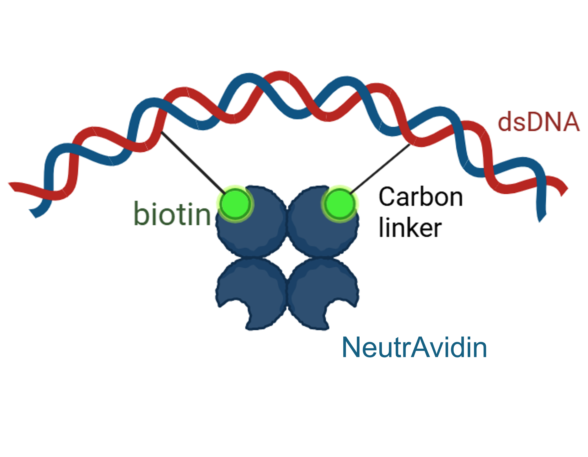
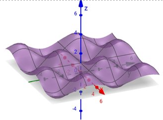

Background
DNA origami is a technique that constructs nanoscale structures by combining circular DNA with numerous short single-stranded DNA (ssDNA) molecules [1]. Current strategies for bending DNA origami include methods that induce curvature in response to ionic concentration [2] and those that employ ssDNA [3] .
[1] P. W. K. Rothemund, Nature, 440, 297–302 (2006)
[2] Suzuki, Y. et al., Angew. Chem. Int. Ed., 59, 6230-6234 (2020)
[3]J. Funke, H. Dietz, Nature Nanotech, 11, 47–52 (2016)
Problem
Existing DNA origami bending methods depend on ionic concentration or specific ssDNA sequences, making them unstable and complex.
Curvature often changes with environmental conditions, and ssDNA modifications can distort the original structure.
Idea
We propose a new tool for bending DNA origami structures using the avidin–biotin interaction, which is both stable and tunable.
Biotin-modified thymine bases are linked by carbon spacers, when two biotins bind one avidin, the double-stranded DNA (dsDNA) bends like a string under tension.
By changing the spacer length and the distance between biotin sites, the curvature of the dsDNA can be precisely controlled.
Simulations demonstrated that both parameters significantly affect the bending angle, and experiments are being conducted to confirm this mechanism.
In this study, we focused on bending dsDNA as a simplified model to verify the feasibility of this approach.
Vision
When multiple thymine bases in planar DNA origami are modified by biotin, the addition of avidin induces the formation of a three-dimensional curved surface composed of multiple combined bends.
Our final goal is the arbitrary design of stable DNA 3D curved structures.
Video
please click to learn more about our project !